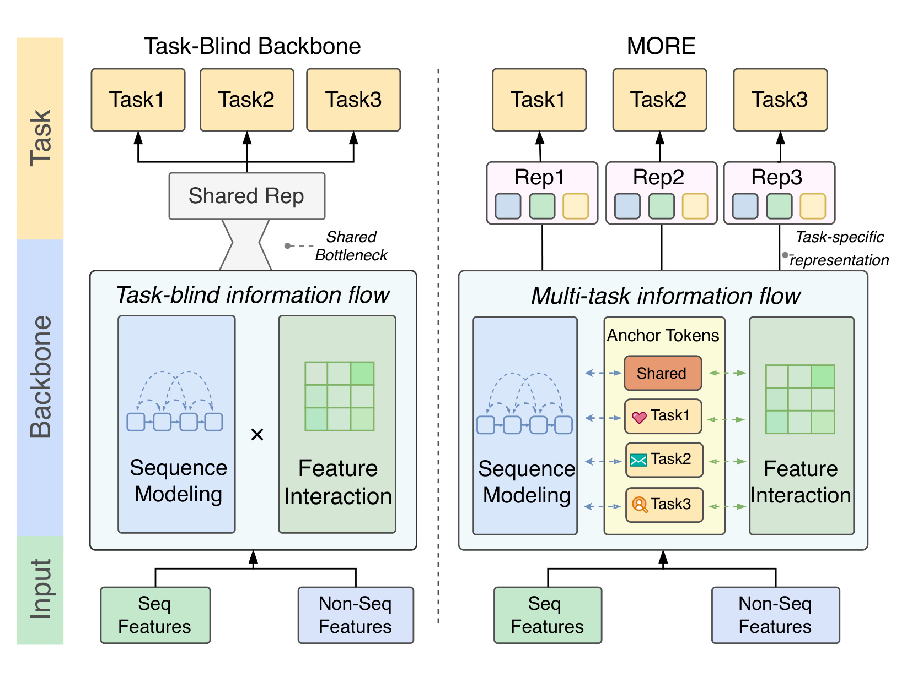
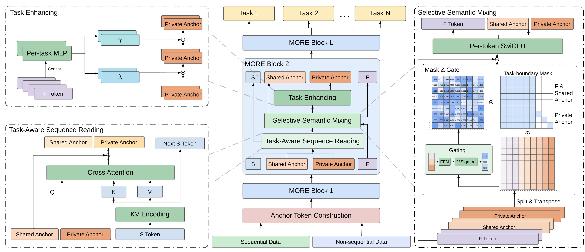
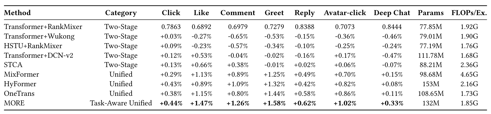
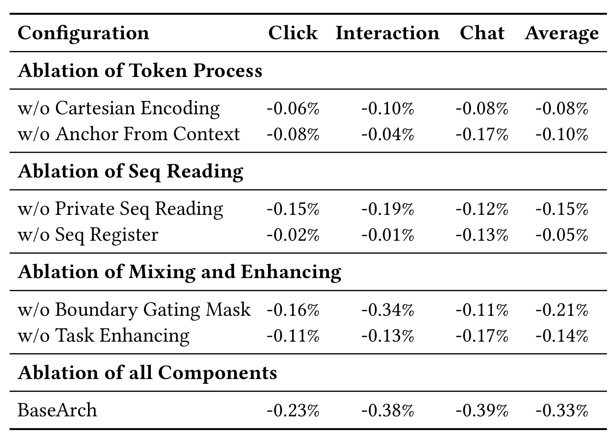
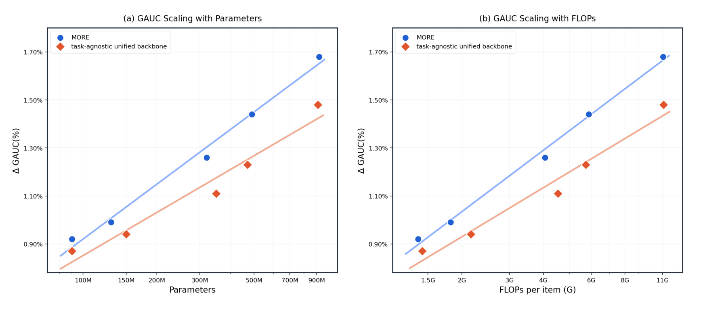
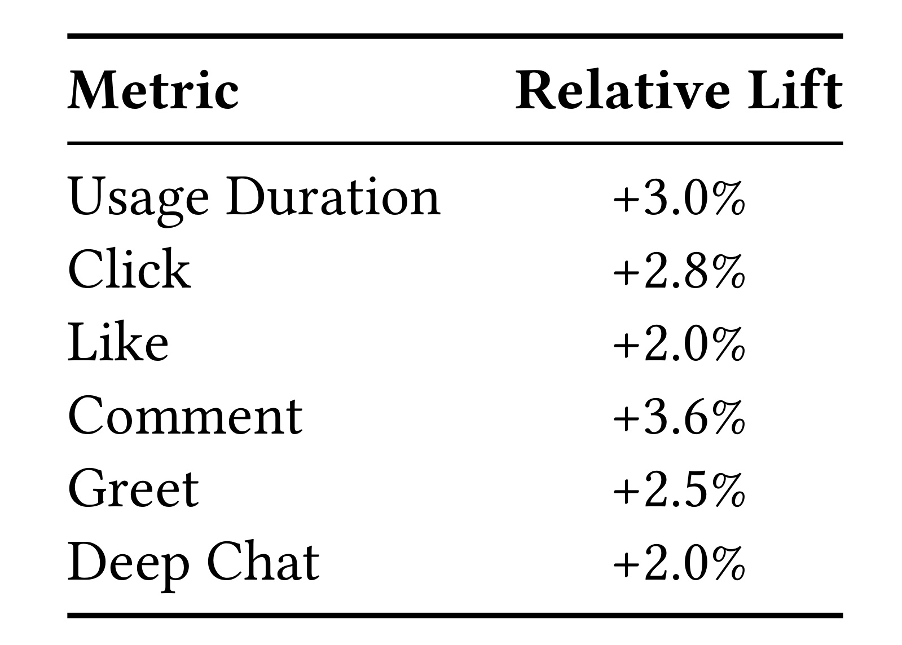

MORE：让多任务信息贯穿统一排序骨干
MORE 的论文题目是《Task-Blind No MORE: Multi-Task Information Flow in Unified Ranking Backbones》，由挚文集团研究者牵头，合作作者来自中国科学技术大学、中国科学院软件研究所及中国科学院大学、北京信息科技大学。论文于 2026 年 9 月 7 日公开，本文按 9 月 10 日获取的八页版本精读；首页标注 CIKM 2026 会议信息。论文入口。本轮未发现并核验到本文独立的官方代码或项目页。它讨论陌陌附近动态排序中的多任务建模：让共享与私有锚点在骨干内部反复读取行为、交换上下文，而不是等最后一层才开始区分点击、评论和深聊。
统一排序架构虽然已经把序列建模和特征交互放进同一骨干，多任务信息却仍被限制在骨干之后的浅层预测塔中。不同任务无法决定骨干如何读取行为、组织特征；当偏好被提前压进同一个共享语义空间，末端路由难以重建此前从未形成的任务专属结构。
1. 背景和问题
陌陌附近动态既承担内容消费，也承担人与人建立联系的功能。用户点开动态、点赞、评论，或者进入头像、打招呼、回复并形成较长对话，虽然发生在同一推荐场景，却不能简单视为同一个兴趣强度的不同阈值。好看的图片可能提高点击，一段具有共同经历的话题可能引出评论，而愿意持续聊天还涉及双方吸引力、交流意愿与情境。若模型把这些行为压成一个通用兴趣向量，末端不同预测塔就必须从同样的压缩结果中挖掘不同依据。论文认为，问题并不只在于损失之间权重难调，也在于不同任务太晚获得自己的信息通路。
过去工业排序的两条扩展路线分别解决特征交叉和历史行为建模。特征路线增加交叉网络、注意力或混合器的深度宽度，使用户属性、物品属性和场景特征能够形成更高阶组合。序列路线延长行为历史，改进目标注意力和序列编码，增加长期兴趣的覆盖。作者把这些路线归纳为两个长期相对独立的模块：先从行为序列获得表示，再与非序列特征融合。这样的工程分工容易维护，但不同信息类型之间只在有限接口交流，增加某一个模块容量未必同时提高另一个模块对任务有用的信息质量。
HyFormer、MixFormer、OneTrans 等统一骨干尝试在可堆叠模块中一起处理序列与特征，让两种容量共同扩展。这里“统一”首先指信号类型及处理层次的统一，并不自动意味着对多个目标的区别已经进入骨干。一个模型即使使用多个损失训练全部共享参数，前向计算仍可能对所有任务提供完全相同的序列查询和相同的特征混合结果。多任务监督会影响共享参数，但这种影响不同于为每个任务显式保留自己的状态、查询及信息边界。这一区别正是 MORE 的切入点，也解释了为何仅把已有统一骨干后面接上更多预测塔，不一定覆盖本文提出的缺口。
MMoE 与 PLE 等方法能通过专家和门控调整不同任务使用哪些表示，论文并未否认这些方法的价值。作者针对的是它们被用作排序骨干之后任务塔时的常见放置方式：路由所面对的是已经计算好的共享基础向量。如果行为读取阶段没有根据评论任务识别相关话题，那么后续门控重新加权已有向量可能仍然缺少必要证据。这里的“无法恢复”应理解为对特定前向结构的信息瓶颈分析，并不是对所有多任务专家模型的普遍不可能性证明。若一个系统本就让任务信号进入早期注意力，或者保留极丰富的原始特征旁路，它与本文所批评的典型架构的差距就需要重新判断。

图一通过左右两条链路展示论文要改变的信息进入位置。左侧从序列特征和非序列特征向上进入骨干，在产生一个共享表示之后才分到三个任务；图中的收窄结构标记共享瓶颈。右侧在骨干内部就出现共享锚点和对应不同任务的私有锚点，顶部输出因此成为三个有区别的表示。两边最后都存在任务输出，区别不在任务头数量，而在前向中间状态是否提前具有任务身份。图里用序列建模、特征交互和锚点之间的箭头表达交互关系，不能据此推断序列状态接受了候选信息的直接反馈；正式方法的序列更新公式仅依赖用户侧序列，这是后面请求级复用能够成立的条件。理解这张概念图时，需要同时保留“锚点逐层读写”和“用户序列保持候选无关”这两个层次，避免把示意箭头解释成任意双向连接。
图一也给出了判断收益来源的一个具体视角。若只把共享向量复制三份并命名为不同任务，图右侧的结构差异实际上没有建立；必须使这些状态在读取或变换时拥有不同参数、先验或可见范围。MORE 后续用私有序列查询、任务边界掩码和任务专属增强分支落实这种差异。与此同时，共享锚点和非序列特征仍被多个任务共同使用，因此所谓边界控制不是把所有任务完全隔离，也不是证明共享梯度永远不会冲突。图提供的是信息组织假设，真正检验它需要观察移除各条专属通路后任务是否变差，以及容量扩展后差距是否持续，不能只凭结构示意图认定任务干扰已经解决。
论文提出第三个动机是扩展收益递减：不断增加任务无关骨干的参数，主要扩展的是共享表示容量，未必按相同比例增加任务区别所需要的自由度。MORE 希望用有限数量的私有状态把新增容量导向不同目标的证据分离。这个命题对现有排序工程很有参考价值，因为增加序列长度、扩大稠密网络和增加任务数会争夺同一计算预算；但本文的实证范围仍然是附近动态这一场景，不能把某条拟合曲线直接当成所有推荐模型的通用扩展定律。适合迁移的首先是检查信息通路的方法，而不是照搬参数规模或预期增益。
本论文还把效率作为结构约束。一条请求可能给数千个候选打分，用户历史对这些候选相同，候选相关特征却不同。若每个候选都重复编码整段历史，任务感知带来的准确率收益可能被服务开销抵消。因此作者把用户级序列状态与候选级特征、锚点分开：共享计算可以批量复用，候选差异保留在查询与任务表征中。后面的系统优化正是依赖这种依赖关系，而不是将所有表示都缓存后希望线上结果保持不变。阅读本文时应分别问清楚“任务如何提前进入骨干”和“哪些运算确实不依赖候选”，这两个问题共同决定设计是否可部署。
2. 方法
2.1 多行为编码与上下文锚点构造
输入分为用户历史序列矩阵和每个候选的非序列语义矩阵。前者包含多种行为，后者包含用户画像、候选属性和场景上下文。论文使用笛卡尔积式行为组合编码：一个历史物品上的多种行为组成二值向量，再映射为动作组合编号。这样，同一物品对应不同动作组合时能够形成不同语义，而不是只保留物品身份、把点击与深层互动合并为一次普通访问。原文式三写为：
符号解释：$s_n$ 是第 $n$ 个行为位置的向量，$i_n$ 是物品，$\mathrm{cid}_n$ 是行为组合编号，三个嵌入分别表示物品、动作组合与可学习时间顺序信息，$N$ 是历史长度。序列组成 $S\in\mathbb{R}^{N\times d}$，$d$ 为统一隐藏维度。这个编码给任务感知读取提供可区分的行为语义，但二值组合的潜在空间随行为种类增加而迅速扩大，长尾组合如何共享统计强度，原文没有进一步实验。它也没有声称仅靠编码即可消除梯度冲突；更保守的理解是减少输入端不必要的语义混叠。非序列特征被分组为 $F\in\mathbb{R}^{M\times d}$。初始化锚点时，模型先把历史平均池化结果与展开的候选上下文拼接，然后用一个多层感知机输出并拆分多枚锚点。原文式四为：
符号解释：$h$ 是历史摘要与非序列语义的联合输入，$K$ 是共享锚点数，$T$ 在方法定义中为任务数；前 $K$ 枚组成 $A_s$，后 $T$ 枚组成私有锚点 $A_p$。每个私有锚点另外加上可学习任务先验 $\pi_t$，即原文式五的加法更新。锚点从请求上下文生成，而非仅为固定任务向量：先验负责标识任务，序列摘要和候选属性负责让同一个任务在不同请求下形成不同起点。平均池化会损失细节，因此后续仍要重新读取完整序列，不能把初始化摘要当作全部行为证据。

图二中央按从下到上的方向展示完整骨干：先根据序列与非序列输入生成锚点，再依次通过多个 MORE 块，最后进入任务预测塔。每个块内部先读取序列，再做选择性语义混合，最后增强私有任务表示。左下角展开读取模块，锚点是查询，行为序列经编码产生键和值；用户序列另外沿自己的路径传到下一层。左上角展开任务增强，从非序列特征生成缩放和偏移，对私有锚点做仿射调制。右侧展开混合模块，把非序列、共享和私有三类 token 拆分、转置后经过门控及边界掩码，再恢复布局并经过逐 token 前馈层。这三个局部视图对应同一个原始总图，并不是三种可独立替换的训练阶段；每一层都按中央流程依次执行，训练和推理都保留这些模块。
右侧掩码图是理解信息边界最重要的部分：非序列与共享锚点的列对所有目标位置可见，私有列只在对应自身的位置开放。共享语义作为公共来源，私有语义避免直接混进其他任务的表示。门控图中的具体小数用于示意通道权重，并非实验测得的可解释性结论，不应根据某个数值推断点击偏好或任务相关性。图里的任务数和锚点数也只是示意，落地默认值要以实现章节为准。方法形式化为每个任务一个私有锚点，而实验描述同时写十三个训练任务和九个对应核心任务的私有锚点，这一映射未完整解释。因而本图支持“任务状态在骨干内部持续存在”的结构理解，但不能用来补全其余任务如何接入或断言十三个任务都拥有独立锚点。
2.2 任务感知序列读取与跨层寄存器
读取阶段共享长序列编码，只为较少的锚点保留不同查询。每层先对序列做 SwiGLU 变换，再投影为键和值；原文式六如下：
符号解释：$\widetilde S$ 为本层更新后的序列，$W_K,W_V$ 是键值投影矩阵，$K_{\mathrm{seq}}$ 和 $V$ 为序列记忆；这里将原文键矩阵 $K$ 记为 $K_{\mathrm{seq}}$，以免与共享锚点数量混淆。更新后的序列继续流向下一层，候选特征及锚点不进入这个序列更新表达式。因此，所谓任务信息与序列表征共同演进，具体体现为锚点在不同层读取不同层次的序列记忆；不能扩展为每个任务都单独重写一份长序列，或候选信息必然反向进入序列前向状态。作者还设置一个初始为零的序列寄存器，在块末累计压缩后的层级摘要，对应原文式七：
符号解释：$\eta\in\mathbb{R}^{d}$ 是共享跨层寄存器，$\operatorname{Pool}$ 将序列压缩为摘要，$\operatorname{LN}$ 做层归一化。寄存器使后续锚点读到此前层级的汇总信息，但其维度有限，不能等同于保存全部历史 token 的无损缓存。原文将更新表述为块末执行，公式叙述又在锚点增强之前介绍它，实现时必须明确当前块使用更新前还是更新后的寄存器，避免无意改变跨层依赖；论文没有给出代码消除这一时序细节的歧义。私有锚点的任务独立查询及寄存器门控见原文式九：
符号解释：$A_p^{(t)}$ 是任务 $t$ 当前的私有锚点，$\widehat A_p^{(t)}$ 是读取结果，$\operatorname{CrossAttn}_p^{(t)}$ 表示具有任务独立参数的交叉注意力，$\operatorname{SwiGLU}_t$ 为该任务解释共享摘要的门控投影。共享锚点在原文式八中采用类似更新，并按锚点分别门控寄存器。这种设计不需要为每个任务复制整段历史编码，却能让评论和点击使用不同查询、不同摘要变换。它的有效性依赖序列记忆仍保留可分辨的证据：若输入已经把行为组合或时序信息丢掉，私有查询也不能凭空恢复细节。后面的私有读取和寄存器消融，分别检验查询差异与跨层摘要是否有独立价值。
2.3 任务边界混合与私有语义增强
读过序列的锚点还需要与用户、候选、场景等非序列信息结合。作者把 $F$、共享锚点和私有锚点拼为 $G\in\mathbb{R}^{H\times d}$，其中 $H=M+K+T$。按照原文式十至十一，每个向量拆成 $H$ 个子空间，子空间宽度 $d_h=d/H$，交换 token 和头的轴后得到 $\widetilde G\in\mathbb{R}^{H\times H\times d_h}$，每个头的切片经门控网络生成长度为 $H$ 的权重 $m_i$。这个设计要求维度与 token 数适配；默认十五个非序列 token 加十七个锚点正好是三十二个位置，隐藏维度二百五十六可被其整除。若实际启用全部十三个私有锚点，token 总数就会改变，不能原封不动沿用上述拆分。MORE 的结构贡献在于把任务身份同时放进查询、混合可见范围与逐任务变换，让分化贯穿每一层。混合阶段用二值矩阵 $\mathcal M$ 与门控逐元素相乘，原文式十二可写为：
符号解释：$\widetilde g_i$ 为头 $i$ 的所有 token 子空间表示，$m_i$ 为学习的门控，$\mathcal M_{i,:}$ 指定可见关系，$\odot$ 是逐元素乘法，长度为 $H$ 的权重沿 $d_h$ 广播，$\operatorname{Reshape}$ 恢复 $H\times d$ 布局。共享和非序列语义可被各任务读取，其他任务的私有来源被屏蔽。这个操作把允许的信息连接写进网络结构，减少高频任务私有信号直接侵入低频任务的机会，但多任务仍共同优化共享参数，因此不能将“私有 token 不直接互读”解释成“所有梯度独立”或“负迁移为零”。混合结果进一步经过两层逐 token 前馈及残差归一化，原文式十三为：
符号解释：$\operatorname{PFFN}_1$ 和 $\operatorname{PFFN}_2$ 是逐 token 前馈变换，$G$ 是混合前的联合表示，$G_{\mathrm{mid}}$、$G_{\mathrm{out}}$ 为中间及最终结果，$\operatorname{Norm}$ 为归一化。输出再沿 token 轴拆回非序列、共享和私有部分；残差保留混合前信息，降低任务信息被一次重组完全覆盖的风险。论文使用轴交换与门控描述轻量混合，但没有公开代码说明所有门控输入的具体张量布局和共享范围，复现时应依据掩码图检查有效依赖，而不能只凭张量形状一致就断言任务隔离成立。任务增强随后对每个私有锚点使用独立的条件网络。任务 $t$ 的 MLP 从非序列特征生成向量 $\lambda_t$ 和 $\gamma_t$，对应原文式十五；私有锚点按式十六更新：
符号解释：$\overline A_p^{(t)}$ 为混合阶段输出，$\lambda_t,\gamma_t\in\mathbb{R}^{d}$ 为任务专属缩放和偏移，$A_p^{(t)}$ 为增强后的表示。这里的 $\lambda_t$ 是向量调制参数，与训练损失中的同名标量权重不同。这是带残差的 FiLM 式调制：不同任务可以根据同样候选属性强化不同语义维度，而不是共享一个统一变换。其专属容量随任务数增长，新增任务不仅意味着增加最后一层输出，也涉及增加私有查询、调制分支和锚点位置；动态任务配置因此仍需重新验证算量及布局。
2.4 块级递推、联合训练与请求级服务
上述三步在每层重复，而非一次性读完历史后只堆任务塔。原文式十七明确了顺序：
符号解释：$l$ 是块编号，$S$ 为用户级序列状态，$F$ 为候选相关非序列状态，$A_s,A_p$ 是共享与私有锚点。第 $l$ 层的私有状态读取序列后，再与更新的上下文混合并调制，然后成为下一层输入。最后每个任务塔同时读取自己的私有锚点和 $F,A_s$ 中的共享语义。模型整体输出各任务预测概率，联合训练目标使用原文式二：
符号解释：$\widehat y_t,y_t$ 分别是预测与标签，$\mathcal L_{\mathrm{BCE}}$ 为二元交叉熵，$w_t$ 是任务损失权重，原文使用标量 $\lambda_t$。这里改记 $w_t$ 只是避免与增强模块的向量混淆。权重仍影响共享参数学到什么，结构边界没有替代多任务采样、标签质量及损失权重治理。论文未披露各任务具体权重及全部标签定义，故复现不能默认等权就是原始设置。
请求级训练将同一次请求下的多个候选聚为一个样本，用户序列只编码一次，候选相关的 $F$ 和锚点沿物品维组织；推理则把候选切成小批次，在批次内复用用户侧计算。可复用性的依据是序列前向不依赖候选，而不是锚点相似。任务查询、非序列混合及最终预测仍需随候选执行。论文报告该组织方式不需修改骨干结构，但不代表不同请求可无限复用状态，也不代表节省量等于候选数倍：批次切分、显存、数据搬运和其他服务环节都会影响尾延迟。后文给出的约百分之三十是实测服务收益，不能从公式直接外推成训练吞吐或总成本同幅度下降。
3. 实验结果
3.1 数据、任务和比较口径
实验来自陌陌附近动态的线上推荐日志，连续九十天训练，紧随其后一天评估。输入同时包含多行为历史、用户画像、候选内容属性和场景上下文。模型联合优化十三个浏览、互动、社交任务，其中列举点击、点赞、评论、关注、打招呼、回复、头像点击以及至少五轮对话的深聊。离线核心指标是按用户计算 AUC 后再汇总的 GAUC，用于衡量个体内部候选排序能力；论文没有给出用户加权细节、无有效正负样本用户的处理规则及全部十三项标签，因此这里保留其描述，不补成某个固定实现。
默认模型有两个 MORE 块、隐藏维度二百五十六、十五个非序列 token 和十七个锚点，后者包括八个共享、九个对应核心任务的私有锚点。作者使用 Adam、批量一千零二十四和多 GPU 数据并行训练。十三个训练任务、九个私有锚点、七个公开离线结果是三个不同口径。它们可以由工程上的任务分组或共享接入解释，但论文未说明，不能替作者确定是哪一种。尤其方法章声称一任务一私有锚点时，实际默认配置的差异应作为复现缺口，而不是被自然语言悄悄抹平。
对照覆盖两阶段与统一骨干：前者包含 Transformer 配 RankMixer、Wukong 或 DCN-v2，也包含 HSTU 配 RankMixer；STCA 在表中归入两阶段，正文说明其在同一流水线整合序列编码和特征交互。统一类包括 MixFormer、HyFormer、OneTrans。所有方法由作者在同一框架重实现，使用相同训练数据、训练日程、评估协议和调参预算，这降低了明显的协议差异，但不等于每个实现都代表原方法最佳工业配置。稠密参数和前向 FLOPs 在表中明显不同，论文的“可比预算”应理解为列出相近量级成本进行比较，不能改写成严格参数与算力双重匹配。
3.2 七项离线结果与准确率成本关系

表一第一行 Transformer 加 RankMixer 提供绝对 GAUC，其他行全部是相对该行的变化百分比。MORE 在点击、点赞、评论、打招呼、回复、头像点击、深聊上的相对增益依次为百分之零点四四、一点四七、一点二六、一点五八、零点六二、一点零二、零点三三。七列都达到表内最高值，支持它在这些公开任务上优于所选对照。读数最容易出错之处是把相对百分比当作绝对百分点。例如点击基线为零点七八六三，乘以一点零零四四得到约零点七八九七六，绝对增加约零点零零三四六，若以百分制表示约为零点三四六个百分点，而不是零点四四个百分点。这一换算只是根据表格做的算术示例，原文没有重新报告四舍五入后的绝对 MORE GAUC。
两阶段替换并未稳定改善多任务表现。Wukong 组合仅点击微增，评论相对下降百分之零点六五；HSTU 组合也只有点击为正；DCN-v2 对点赞有益，却使深聊下降百分之零点四七。STCA 改善点赞和评论，但打招呼和深聊略负。统一骨干三种对照则在七列全部为正，表明先解决序列与非序列的割裂本身已经有效。MORE 在其上进一步改善，但不同任务增量并不均匀：点击与 HyFormer 的差距只有相对参考基线增益的零点零一个百分点，点赞对最好的统一基线差距更明显。这个分布比简单说“全面显著领先”更准确，因为表一没有为这些离线小差异给出置信区间或显著性检验。
成本列同样需要逐项比较。MORE 是一亿三千二百万稠密参数、每例一点八五十亿前向 FLOPs；参考模型是七千七百八十五万参数、一点九二十亿 FLOPs。MORE 的参数更多、算量略低，说明新增任务容量没有等比例推高所报告前向成本，但不能说同时降低参数和算量。HyFormer 为一亿五千三百万参数、二点一六十亿 FLOPs，因此 MORE 在这组比较里两者都更小；OneTrans 是一亿零八百六十五万参数、一点七三十亿 FLOPs，MORE 的成本则更高。与 MixFormer 的四点六五十亿 FLOPs 相比优势较大，也不能自动转换为同幅度真实延迟下降，因为算子效率和共享计算方式不同。
从结果解释上看，任务感知机制与正向收益相一致，但表一并不单独证明所有收益都来自信息边界。一方面，不同模型架构和参数分配同时变化；另一方面，共享锚点初始化、私有查询、混合掩码和任务增强一起引入。只有结合下一节消融，才可以把对整体有效性的证据进一步拆成对具体模块的支持。对工程迁移来说，值得优先关注的是已有统一骨干上是否也出现互动目标不足、增加共享容量收益有限，而不是直接把表内所有负向对照判断成“不适合工业推荐”。这些对照仍依赖本数据、本实现和本调参范围。
3.3 消融揭示边界控制的重要性

表二所有下降相对完整 MORE，列口径也变了：Interaction 是点赞、评论和打招呼的平均，Chat 对应正文所说深聊，Average 是 Click、Interaction、Chat 三列的算术平均。它不是七项任务平均，更不是十三项训练目标的等权平均。移除笛卡尔积编码后平均下降百分之零点零八，取消上下文生成锚点后平均下降百分之零点一零，说明输入语义和锚点起点均有贡献。后一个消融在深聊列下降百分之零点一七，比点击和互动更大；正文把输入处理消融下降概括为零点零四至零点一零，与该单元格不一致。本笔记以原始表格数值为准，不沿用这个过窄的文字范围。
移除私有序列读取后，点击、互动、深聊分别下降百分之零点一五、零点一九、零点一二，平均下降零点一五。这个对照是“任务查询必须提前进入行为读取”的直接支持，比仅比较完整 MORE 与其他骨干更接近研究问题。移除序列寄存器的平均下降只有零点零五，但深聊下降零点一三，而点击和互动几乎不变，说明跨层摘要的价值更集中于某些任务。这里仍不能据此宣布寄存器专门建模长期社交兴趣，因为作者没有提供历史长度分桶或注意力分析；表格只显示任务敏感度，语义解释仍是机制假设。
移除边界门控掩码产生最大的单组件平均下降百分之零点二一，其中互动下降零点三四，点击下降零点一六，深聊下降零点一一。作者将它解释为高频任务梯度在无区分混合中支配共享权重，使互动和社交依赖的表示被稀释。数据支持“边界控制有用”，但论文没有展示梯度余弦、任务频次分桶或冲突率，因此“高频梯度支配”属于作者的机制解释，尚不是被直接测量的过程。相比之下，移除任务增强平均下降零点一四，深聊下降零点一七，表明上下文条件化的私有容量也有价值，并非只靠掩码就足够。
所有六个组件一起去掉的 BaseArch 平均下降百分之零点三三，三列都下降。这个联合结果不能等于六项单独下降的加和：各模块改变彼此输入，消融之间存在重叠和协同。与此同时，去掉模块往往也改变参数或运算量，表二未附各消融的预算，因此不能把下降完全归因于某一个抽象设计原则。最稳妥的结论是，在作者采用的完整配置和训练协议下，输入、私有查询、边界混合、任务增强均有一致正向贡献，边界掩码的平均影响最大。复现时应先检查这些组件是否在相同任务分组、损失权重和容量条件下仍保留排序，而不是仅复刻平均数。
3.4 容量扩展与线上服务证据

图三左面板横轴是稠密参数，右面板横轴是每例前向 FLOPs；两个纵轴都是相对线上生产模型的平均 GAUC 增益百分比。蓝圆代表 MORE，橙色菱形代表遵循 HyFormer 式序列交叉注意力与 token 混合、但没有任务感知组件的统一骨干。两幅图中同一组配置只是换了成本横轴，不能当成两个独立数据集的复现。研究同时调整层数与隐藏维度，覆盖约零点一到零点九十亿参数，以及约一点四到十一十亿 FLOPs，每个配置独立训练。图例中的直线表示拟合趋势，散点才是已测模型；作者没有提供拟合方程、误差带或多随机种子方差，不能从线条平滑程度推断测量无噪声。
可视上最小规模两者比较接近，规模增大后 MORE 的增益与拟合斜率更高，最大规模附近差距扩大。这个现象支持作者的判断：同样把模型做大，显式任务状态有机会更有效地利用新增容量。它并不证明参数增长可以一直换来线性收益，也不支持把图上百分比外推到更长序列、更多任务或其他平台。两条曲线在相近参数和相近算量维度都保留优势，比只展示参数横轴更有说服力，但每点的具体层数、宽度、吞吐及显存未完整列出，复现者仍难以精确重建每个预算点。更有用的后续实验是固定层数只加宽，或固定宽度只加深，检验任务感知收益究竟来自何种容量变化。
图三的参考对象还与表一不同：表一是 Transformer 加 RankMixer，图三是线上生产模型。因此不能把图三某点接近百分之一的平均收益，与表一七项增益简单相减来算“扩容额外赚了多少”。同时，正文说按所有任务求平均，而表二采用三个任务组，三个输出面的平均指标不宜混合汇总。工业论文常把整体比较、消融和扩展曲线压缩到很少页面；精读时保留这些对照与聚合差异，才能避免把几张都写 GAUC 的图误认为完全一致的实验口径。

表三对应两周线上 A/B，MORE 替换生产中的 DLRM 风格排序模型，采用均衡流量划分。六项指标分别为使用时长增加百分之三点零、点击增加二点八、点赞增加二点零、评论增加三点六、打招呼增加二点五、深聊增加二点零。论文称这些提升均达到显著性水平小于零点零五，实验期间指标稳定、没有恶化趋势。摘要把百分之三点六概括为互动率，而表三明确标为 Comment，本笔记按评论指标报告。这里是业务行为的相对变化，不是 GAUC 变化，也不是百分点；论文没有公开各指标基线绝对值、实验人数、用户分层和检验方法，所以无法独立重算显著性或效果区间。
线上六项同时为正是很有价值的整体系统证据，说明收益至少不限于点击代理指标，也延伸到更深层互动。它仍不能证明每个模块都分别带来业务收益，因为在线比较的是完整 MORE 和生产基线，并未逐项上线消融。时长增加还需要与长期留存、内容质量、负反馈等一起判断，本文没有这些长期结果。作者称模型已部署并服务线上流量，这是原文报告的部署状态；本笔记没有对生产服务进行独立验证，也不把两周稳定性扩展成长周期安全性结论。
延迟结果来自同一节另一项服务比较：采用请求级共享计算后，相比 MORE 自己逐候选计算的部署方式，P99 打分延迟约下降百分之三十。准确率对照是生产 DLRM，延迟对照是逐候选 MORE，两者不能混写。作者将下降归于小批次内复用用户侧序列计算，这与方法中的候选无关序列更新相吻合。但论文未给绝对毫秒值、硬件、批大小分布、请求候选量及峰值吞吐，因此无法判断另一个服务能否复现同样比例，也不能宣称相对生产 DLRM 延迟下降三成。这个结果最能证明的是：在任务感知结构之外，清晰的用户级与候选级依赖划分还为真实服务优化创造了空间。
4. 总结
MORE 的核心价值是把多任务学习从“末端预测塔如何分工”推进到“骨干内部谁读取什么、谁可以影响谁”。它没有取消共享表示，而是保留共享锚点和非序列语义，同时让私有锚点逐层吸收行为证据、受边界约束地混合上下文，再做任务专属调制。对一个已经采用统一序列特征骨干的系统，这比继续无差别扩大共享网络更有针对性。表一证明公开七项任务在作者实现中都能受益，表二让边界掩码与私有读取的重要性有了消融依据，图三提示任务感知容量可能有更好的扩展效率，表三则把收益连接到真实社交业务。但这些证据层次不同，不能相互替代。
我的判断是，最值得迁移的是两条设计约束：第一，任务身份需要影响行为查询和中间表示形成，而不只是决定最终输出头；第二，用户侧序列的候选无关性应在计算图中明确保存。前者让任务差异有机会在信息压缩之前发挥作用，后者让模型规模与服务成本之间多出复用空间。二者可以同时成立，因此并不需要为了任务专属语义就复制整个长序列网络。具体迁移应从现有系统的任务冲突证据出发，例如评论与点击对相同历史的关注是否不同，深层行为是否在共享混合后下降，再判断锚点或边界控制是否针对了真实瓶颈。
局限首先是任务映射缺失：十三个训练目标、九个私有锚点、七项离线公开指标的对应关系不完整，这直接影响实现复现和结论覆盖范围。其次是比较预算未严格锁定：主表模型参数与算量不同，消融未列对应成本，难以完全分离架构与容量分配影响。第三是统计信息有限：离线缺少方差、线上仅给显著性阈值，不能独立评估小增益的稳健性或用户异质性。第四是机制证据不足：边界掩码有用不等于已经直接观察到高频梯度污染，共享参数的负迁移仍可能存在。第五是外推范围有限：数据来自单一社交场景，公开评估是一日离线和两周线上，没有跨场景、长期留存或动态任务增删实验。最后，请求级服务没有完整硬件与延迟分位数数据，约三成 P99 下降只能保留原始对照口径。
后续最先应核实完整任务到锚点和预测塔的映射，同时补全标签定义、损失权重及寄存器更新时间；这些决定是否在复现同一个模型。第二步可在已有统一骨干上做等参数或等 FLOPs 的小规模对照，依次加入上下文私有锚点、任务独立查询、边界掩码，再看分任务及分用户群结果，避免把更多容量误认为结构收益。第三步应测量私有通路和共享参数的梯度关系，结合行为频次与历史长度分桶，验证“互动目标更依赖任务边界”和“深聊更依赖寄存器”是否为稳定现象。第四步在服务侧固定模型和候选集合，对照逐候选与请求级组织的输出一致性、吞吐、显存及尾延迟，将准确率收益和计算复用收益分开验收。
如果后续只能投入一次工程试验，我会优先选择在现有统一骨干中保留共享序列、加入小规模私有查询和严格可检查的混合掩码。原因是消融对这两部分的支持相对直接，而且能够较清楚地限制改动范围。这个选择是基于本文证据的迁移假设，不是原文保证的最佳配置；若现有任务关系高度一致，或本来已有早期任务条件化，收益可能明显变小。MORE 最终提供的是一种可检验的信息流设计，而不是多任务排序的一次性终局答案。